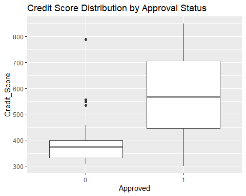

Flagship

Credit-risk ML · R
Loan Approval Prediction
Credit score and employment status drive approval — existing debt doesn't. Proven with hypothesis testing, not hunches.
Built and compared Logistic Regression and Decision Tree models on applicant data, using hypothesis tests to isolate the factors that truly drive approve/reject. Median credit score ~570 (approved) vs ~370 (declined); the tree's first split is credit score < 399.5.
Academic project · Western Sydney University